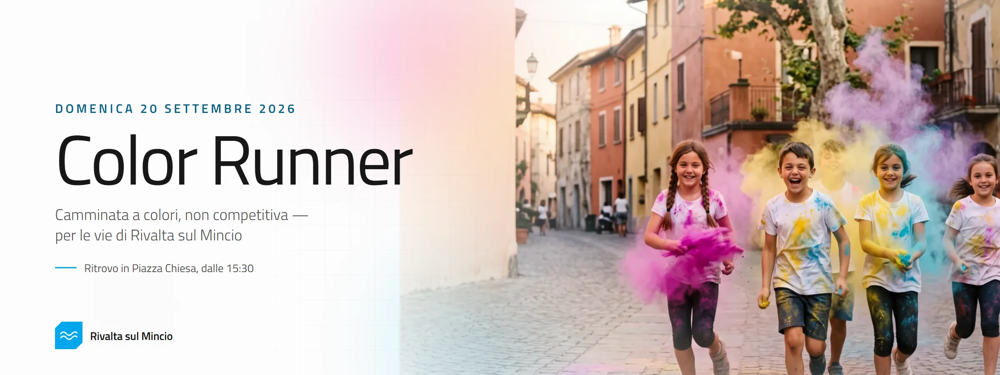

Regolamento
Le regole della camminata a colori: cosa comprende l'iscrizione, cosa succede se rinunci o se salta la giornata, come ci si comporta lungo il percorso e come vengono trattati i tuoi dati. Iscrivendosi lo si accetta per intero.
1 — L'evento
La Color Runner è una camminata, o corsa leggera, a colori e non competitiva: si va a passo libero, non c'è cronometraggio e non c'è classifica. Lungo il percorso ci sono stazioni dove si viene coperti di polveri colorate. Quest'anno prende il posto dei tornei del Palio delle Contrade.
Si tiene domenica 20 settembre 2026, per le vie di Rivalta sul Mincio (frazione del Comune di Rodigo, MN). Ritrovo dalle 15:30 in Piazza Chiesa, davanti alla chiesa, da dove parte il giro per il paese. Ora esatta della partenza, lunghezza e tracciato del percorso vengono comunicati agli iscritti via email nei giorni prima dell'evento.
L'evento si svolge con qualsiasi condizione meteo. Solo ragioni di sicurezza, ordinanze o cause di forza maggiore possono farlo rinviare o annullare: in quel caso vale il punto 4.
Organizzano la Color Runner Rebecca Zovi, Elena Colla e Alessandra Nosè, indicate come «le organizzatrici» in questo regolamento; gli enti coinvolti sono quelli riportati in fondo alla pagina di iscrizione. Recapito unico: color-runner@rivaltasulmincio.it.
2 — Chi può partecipare
Può partecipare chiunque se la cava con una passeggiata: il ritmo lo decide chi cammina. Serve uno stato di salute compatibile con un'attività fisica leggera; chi ha dubbi ne parli prima con il proprio medico. Non essendo una gara, non è richiesto il certificato medico agonistico.
- Minorenni: l'iscrizione la fa un genitore o chi ne ha la tutela, con i dati del minore, e per tutto il percorso il minore è accompagnato da un adulto responsabile.
- Un'iscrizione per persona, intestata a chi partecipa davvero. Per iscrivere qualcun altro si ricompila il modulo con i suoi dati.
3 — Iscrizione, quota, pagamento
Ci si iscrive solo online, dalla pagina della Color Runner, fino a esaurimento dei posti disponibili e comunque non oltre le 23:59 di sabato 19 settembre 2026.
La quota è di 10 € a persona, più 1 € di commissioni di servizio: 11 € in tutto. L'euro di commissioni copre quanto il circuito di pagamento trattiene su ogni incasso, così alla camminata arrivano i 10 € pieni. Le due voci restano separate sia sulla pagina di pagamento sia sulla ricevuta.
La quota comprende la copertura assicurativa per la giornata, il kit di polveri colorate e l'assistenza lungo il percorso. Il codice fiscale chiesto nel modulo serve unicamente alla polizza.
Il pagamento si fa con carta sulle pagine di Stripe: il sito non vede e non conserva i dati della carta. A pagamento riuscito arriva un'email con la ricevuta; se il pagamento non va a buon fine arriva comunque un'email che lo dice. L'iscrizione è valida solo a pagamento registrato.
4 — Rinuncia, rimborsi, annullamento
L'evento ha una data fissa: per questo non si applica il diritto di recesso (art. 59, comma 1, lett. n, del Codice del consumo, D.Lgs. 206/2005).
- Rinuncia del partecipante: la quota di 10 € non si rimborsa — copre coperture e materiali già impegnati.
- Cessione a un'altra persona: possibile fino a 7 giorni prima dell'evento, scrivendo alle organizzatrici i dati del nuovo partecipante. Nessun costo aggiuntivo.
- Evento annullato dalle organizzatrici e non recuperato: viene restituita la quota di 10 €.
- Evento rinviato a una nuova data: l'iscrizione resta valida. Chi non può esserci chiede il rimborso della quota di 10 € entro 14 giorni dalla comunicazione della nuova data.
- L'1 € di commissioni di servizio non si rimborsa in nessun caso: lo trattiene il circuito di pagamento sull'incasso, a prescindere da come va a finire.
I rimborsi previsti qui sopra vengono disposti sullo stesso metodo di pagamento usato per l'iscrizione, entro 30 giorni.
5 — Polveri colorate e sicurezza
Le polveri sono a base di amido di mais, atossiche e lavabili via da pelle e capelli con acqua e sapone. Restano comunque una polvere fine: possono irritare occhi, naso e gola.
se soffri di asma o gravi problemi respiratori, se sei in gravidanza, se hai allergie note agli amidi. Con le lenti a contatto meglio passare agli occhiali per la giornata.
- Al passaggio delle stazioni: occhi e bocca chiusi, respiro dal naso. Utili occhiali da sole e una bandana o un buff per naso e bocca.
- Vestiti con abiti e scarpe che possono macchiarsi per sempre. Una maglietta chiara rende di più.
- Non lanciare polvere in faccia a nessuno, né verso bambini piccoli, animali o chi chiede di non essere colpito.
6 — Lungo il percorso
- Il percorso è su strade urbane, aperte o solo in parte chiuse al traffico: si seguono le indicazioni del personale e dei volontari, si tiene la destra, si dà sempre precedenza ai mezzi di soccorso.
- Si resta dentro il tracciato segnalato e si rispettano gli orari di apertura e chiusura del percorso.
- No a biciclette, monopattini, pattini, passeggini da corsa e animali, salvo diversa indicazione delle organizzatrici.
- I rifiuti si lasciano solo negli appositi punti di raccolta. La polvere è biodegradabile ma il paese va lasciato com'era.
- Chi tiene comportamenti pericolosi, molesti o offensivi può essere allontanato dall'evento senza rimborso.
7 — Responsabilità
Ci si iscrive e si partecipa sotto la propria responsabilità, dichiarando di essere in condizioni fisiche idonee a un'attività fisica leggera e di aver letto questo regolamento.
Le organizzatrici hanno stipulato le coperture assicurative di legge per le manifestazioni non competitive. Oltre a queste non rispondono di danni a persone o cose derivanti dal mancato rispetto del regolamento o da comportamenti imprudenti, né di furti o smarrimenti di oggetti personali.
Cause di forza maggiore — meteo, ordinanze, ragioni di ordine pubblico o sanitarie — possono modificare percorso e orari o interrompere l'evento anche a manifestazione iniziata. In tal caso non spetta alcun rimborso oltre a quanto previsto al punto 4 per l'annullamento o il rinvio.
8 — Foto e video
Durante l'evento vengono scattate foto e girati video. Iscrivendosi si autorizza l'uso gratuito di queste immagini per raccontare e promuovere la Color Runner e le attività di Rivalta sul Mincio: sito, social, stampa locale, edizioni future.
Chi non vuole comparire lo comunica per iscritto alle organizzatrici prima dell'evento e durante si tiene fuori dall'inquadratura delle riprese ufficiali.
9 — Dati personali
Nome, cognome, codice fiscale, indirizzo, email e telefono servono a gestire l'iscrizione, la polizza assicurativa e il pagamento. Il trattamento è necessario per dare seguito all'iscrizione e agli obblighi di legge collegati.
- I dati restano alle organizzatrici e a Stripe, che gestisce l'incasso. Non vengono ceduti ad altri e non servono a mandare pubblicità.
- Si conservano per il tempo necessario agli adempimenti assicurativi, contabili e fiscali, poi si cancellano.
- In ogni momento puoi chiedere di vedere, correggere o cancellare i tuoi dati, o opporti al trattamento, scrivendo alle organizzatrici.
Titolari del trattamento: Rebecca Zovi, Elena Colla e Alessandra Nosè — color-runner@rivaltasulmincio.it. Il pagamento è affidato a Stripe, che tratta i dati della carta come autonomo titolare secondo la propria informativa.
10 — Accettazione
Completando l'iscrizione si dichiara di aver letto e accettato questo regolamento in ogni sua parte, informativa sui dati compresa. Per quanto non previsto valgono le norme di legge applicabili; foro competente Mantova.
Eventuali modifiche fino al giorno dell'evento vengono pubblicate su questa pagina e comunicate via email agli iscritti. Regolamento pubblicato il 26 agosto 2026.